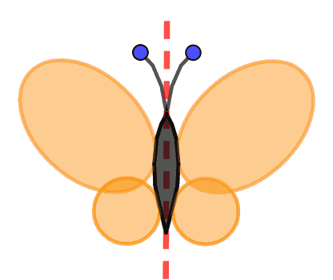

tfontanet.github.io
tfontanet.github.io

Manuel utilisé en classe : Myriade 6ème (Bordas, Edition 2021).
 Travailler efficacement en mathématiques
Travailler efficacement en mathématiques
 Liste des propriétés de géométrie utiles en 6ème (avec
Liste des propriétés de géométrie utiles en 6ème (avec  )
)
Accès à WIMS  pour mes élèves
pour mes élèves
Tous les documents ci-dessus sont publiés sous licence GFDL (Copyleft)
: Vous pouvez donc les redistribuer ou les modifier, ils sont là pour ça !